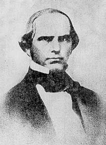
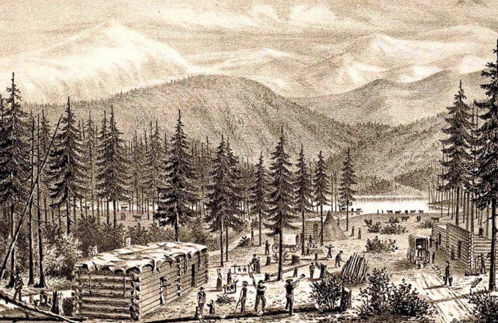

In the age of manifest destiny, America is ripe for taking by eager settlers. Settlers who are looking for a home, hopes of riches or for the search of a better life. This is the dream of many. Yet, in the harsh Sierra Nevada mountains, a group of 80 or so migrants are trapped by a nightmare of snow. A gruesome tale where survivors were forced to eat their beloved dogs, travel companions and even family members to survive. This is the story of the ill-fated Donner party.
The story of the Donner party starts with a lawyer by the name of Lansford Hastings. Hastings is not a member of the party, but he was indirectly responsible for the death of the migrants. Hastings was a man of opportunity. Back in the 1840's, California and Oregon were the destinations of westbound migrants. California was not part of the US, but part of Mexico.
Hastings saw the wondrous land of California. Land that is not owned by white men. Hastings who was full of good old Manifest destiny thought of a plan. Hastings knew if he can get enough white settlers to Atla California, the white settlers can overthrow the Mexicans and Hastings can become king of a new country. Hastings had to find a way to get people to come to Alta California. The best way Hastings thought was for a shortcut.
Hastings was not an explorer but a lawyer. And as any good lawyer would do, to make their crazy idea of overthrowing a local government. Hastings opened a map up, drew a line and said. "That's the shortcut". Hastings begun to advertise his shortcut to unsuspecting pioneers. He never did take the shortcut until people attempted to cross it. Instead of a well established trail, anyone fooled by Hasting's cutoff would be forced to literally carve their own way to California. Cutting down trees, moving boulders, hauling wagons up a mountain with teams of oxen and other beasts.
Despite the name of "Donner Party", the group was very diverse with many groups traveling as one large party.The group consisted of several families, couples, servants, hired hands and guides. Each color represents a group or family that each person was a part of. The white nodes are either hired hands or guides.
Despite the time, there are several pictures of members who survived or had passed during the ordeal.
For the members of the Donner Party, a majority of the members had in fact been children in the modern sense. About 50% of the party had been children, instead of rough and gruff pioneers. With the second-biggest majority being adults followed by the lone senior, Sarah Keyes.
Additionally, most members of the party had been male. With a little over half of marriage age being married. Most men above the age of 18 were single, mostly because they had been hired hands to drive the wagons. While most women above 18 being married.
However, for our pioneers they had quickly come bogged down with the shortcut and ended up taking much longer then everybody else. Despite starting in May, the timing was just not enough and with literally carving out paths into the mountains. The Donner Party became trapped in the Sierra Neveda Mountains, only a few hundred miles from their destination. Over the coming months of a very harsh winter, the Party slowly died out as either disease, cold, starvation and other violence consumed the party.
A majority of the deaths started in December 1846 as our pioneers had became stuck in the cold sierra Neveda winters. About 21 unfortunate souls were eaten as food to keep the survivors alive. The ages or gender of the eaten did not matter as anyone could have been eaten after death. Two Indian guides by the name of Luis and Salvador were the only ones for sure known to be murdered as food on the account of race as they were the only two Native Americans, it was easier for white settlers to dehumanize them.
Here is a breakdown of who had survived or had died. The survivors are all lined up at the bottom while the those who had passed are on top. Putting a name of each person makes the whole chart have more of an impact.
A majority of the deaths for the party had occurred by Truckee Lake (Now known as Donner Lake). Very few deaths had occurred during the journey. If the Donner Party had taken a normal path, all but two of the deaths could have been prevented. As only two of the pioneers had died of natural causes before the party had begun to endure hardship.
The whole ordeal was a horrific one to say the least and a memorial now stands at Donner Lake which is intact a very lovely lake to visit. But behind such beauty hides a nightmare.